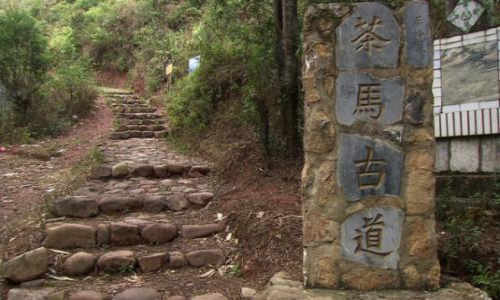
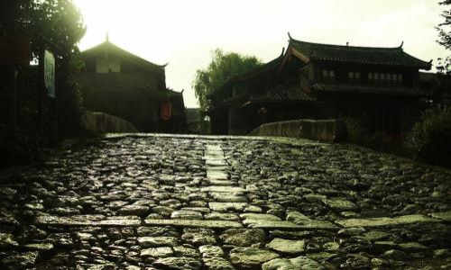
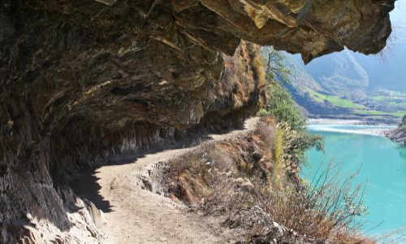

morly旅游圈
茶马古道，源于古代西南边疆和西北边疆的茶马互市，兴于唐宋，盛于明清，二战中后期最为兴盛。茶马古道分川藏、滇藏两路，连接川滇藏，延伸入不丹、尼泊尔、印度境内（此为滇越茶马古道），直到西亚、西非红海海岸。 中国茶马古道有三条，第一条是陕甘茶马古道，是中国内地茶叶西行并换回马匹的主道。第二条是陕康藏茶马古道（蹚古道），主要是陕西人开辟；第三条是滇藏茶马古道。 陕康藏茶马古道—蹚古道，始于汉唐，由陕西商人与古代西南边疆的茶马互市形成。由于明清时政府对贩茶实行政府管制，贩茶分区域，其中最繁华的茶马交易市场在康定，称为---蹚古道，因此陕康藏茶马古道是当时可以在国内跨区贩茶的茶马古道。川藏茶马古道是陕康藏茶马古道的一部分，东起雅州边茶产地雅安，经打箭炉（今康定），西至西藏拉萨，最后通到不丹、尼泊尔和印度，全长近四千余公里，已有一千三百多年历史，具有深厚的历史积淀和文化底蕴，是古代西藏和内地联系必不可少的桥梁和纽带。 川藏茶马古道是陕康藏茶马古道的一部分，始于唐代，东起雅州边茶产地雅安，经打箭炉（今康定），西至西藏拉萨，最后通到不丹、尼泊尔和印度，全长近四千余公里，已有一千三百多年历史，具有深厚的历史积淀和文化底蕴，是古代西藏和内地联系必不可少的桥梁和纽带。
旅游景区: 茶马古道风景区位于湖南省益阳市安化县境内，距离益阳市区150公里。素以南方最后一支马帮和最完整的茶马古道遗存著称于世，这里保留了原生态的高山民居风光和峡谷风光，远离尘嚣，秀美独特，故被称为“高山之城，茶马遗风”。 茶马古道风景区是一处融山水风光和历史文化于一体的风景区。在这里，您可以体验骑马观光的乐趣，也可以探寻马帮文化的历史遗存。景区内林秀水美，山高谷深，集“雄、奇、险、秀、幽”等风景特色于一身： 雄者：景区内峡谷深涧，危崖耸立，雄浑有力，气势磅礴，充满雄伟之美。 奇者：景区内处处可见奇峰怪石，或拟人，或拟兽，形态各异，气象万千，造型丰富，鬼斧神工。 险者：景区内的游道大多依崖壁而建，虽然增加了足够的安全措施，仍不失惊险刺激，正如古诗云“栈道依松划，危楼叠石连”。 秀者：即秀丽之美。景区内林木葱郁，溪水潺潺，阴柔共媚。远山逶迤，四季繁花，苍翠欲滴，富有高山民居特色的木屋民居掩映期间，秀美极致。 幽者：乃幽深、幽静之美。这里山高谷深，群山围闭，远离尘嚣，是超脱逸世、凡尘不染之佳境。行于林间小道，便会油然产生超凡、隐逸之情，是闲暇度假，修心养性的风水宝地。有诗赞曰：“古壁嶙峋跨石台，悠然盘径绝尘埃，一溪水色浸台径，四面涛声入玉杯”。 茶马古道风景区下辖三个单元景区：关山峡谷游览区、高城文化体验景区、川岩景区。关山峡谷以“雄、险”见长，适合探险攀爬体验，惊险刺激；高城是体验高山人家民俗民风以及安化茶文化的景区，适合休闲度假，是厌倦城市喧嚣的人们可以“让心放下的地方”；川岩景区景观秀美奇特，阴凉而幽雅，被人称作“骑在马背上的峡谷”，带给人骑马观光的独特体验。
交通: 公交：乘坐32/31路至道班放下车即是，建议包车前往。
门票: 免费 tips: 骑马需另付费，注意与马帮还价。
开放时间: 全天
内容整理至网络，如有侵权，请联系我们！1255394075@qq.com
  